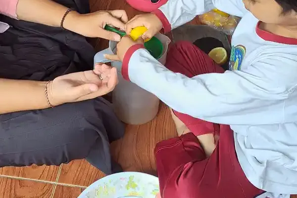
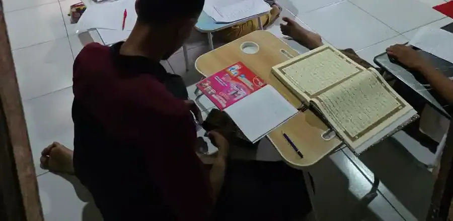

Jawaban singkat: rasa cemas adalah bagian wajar dari tumbuh kembang anak, misalnya takut berpisah dengan orang tua di usia balita atau gugup sebelum ujian. Kecemasan baru disebut gangguan bila rasa takut dan khawatirnya berlebihan, tidak kunjung hilang, dan mengganggu kegiatan sehari-hari anak di rumah, sekolah, atau saat bermain. Bentuknya antara lain gangguan cemas perpisahan, fobia, gangguan cemas sosial, gangguan cemas menyeluruh, dan gangguan panik. Gangguan kecemasan anak bisa ditangani, terutama bila dikenali lebih awal. Diagnosis dan rencana penanganannya ditetapkan oleh psikolog klinis, dokter, atau psikiater anak, bukan dari daftar ciri di internet.
Sebelum membaca
Artikel ini membantu orang tua dan guru memahami kecemasan pada anak dan tahu kapan perlu meminta bantuan. Daftar tanda di bawah bukan alat untuk mendiagnosis sendiri. Bila Anda khawatir, bawa catatan pengamatan Anda ke tenaga profesional yang berizin.
Daftar Isi
- Cemas yang wajar dan gangguan kecemasan
- Seberapa banyak anak yang mengalaminya
- Jenis gangguan kecemasan pada anak
- Tanda yang perlu diperhatikan orang tua
- Kecemasan pada anak berkebutuhan khusus
- Kapan perlu bantuan profesional
- Penanganan yang dipakai tenaga profesional
- Yang bisa dilakukan orang tua di rumah
- Peran guru dan sekolah
- Pertanyaan yang sering diajukan
Cemas yang wajar dan gangguan kecemasan pada anak
Semua anak pernah merasa takut dan khawatir. Menurut American Academy of Child and Adolescent Psychiatry (AACAP), kecemasan pada anak adalah hal yang diharapkan dan normal pada masa-masa tertentu dalam perkembangan. Sejak sekitar usia 8 bulan sampai usia prasekolah, anak yang sehat bisa sangat gelisah saat berpisah dari orang tua atau orang dekatnya. Anak kecil juga bisa punya rasa takut yang singkat, misalnya takut gelap, petir, binatang, atau orang asing.
NHS, layanan kesehatan nasional Inggris, menjelaskan hal serupa. Cemas berpisah sangat umum pada anak usia sekitar 6 bulan sampai 3 tahun dan biasanya mereda di usia 2 sampai 3 tahun. Anak prasekolah sering punya rasa takut khusus, misalnya pada serangga, ketinggian, air, darah, atau gelap, yang umumnya hilang perlahan dengan sendirinya. Anak yang lebih besar wajar merasa cemas saat pindah sekolah atau menjelang ujian.
Lalu kapan kecemasan menjadi gangguan? National Institute of Mental Health (NIMH) Amerika Serikat menyebut gangguan kecemasan lebih dari sekadar khawatir sesekali: kecemasannya tidak hilang, muncul di banyak situasi, dan bisa makin berat seiring waktu. CDC menjelaskan bahwa anak bisa didiagnosis gangguan kecemasan bila ia tidak melewati rasa takut dan khawatir yang biasa dialami anak kecil, atau bila rasa takut dan khawatirnya begitu banyak sampai mengganggu kegiatan di sekolah, di rumah, atau saat bermain.
| Hal yang diamati | Cenderung bagian dari tumbuh kembang | Perlu dibicarakan dengan tenaga profesional |
|---|---|---|
| Waktu munculnya | Muncul di usia atau situasi yang lazim, misalnya cemas berpisah pada balita atau gugup sebelum ujian | Tidak mereda seiring bertambahnya usia, atau muncul di banyak situasi sekaligus |
| Lamanya | Mereda setelah situasinya lewat atau setelah anak ditenangkan | Menetap, tidak membaik, atau justru makin berat |
| Dampak pada kegiatan | Anak tetap bisa sekolah, bermain, dan tidur dengan cukup baik | Anak menghindari sekolah, teman, atau kegiatan sehari-hari, atau tidur dan makannya terganggu |
| Respons terhadap dukungan | Membaik dengan penjelasan, rutinitas, dan penenangan dari orang tua | Cara-cara di rumah tidak lagi membantu |
Tabel ini kami rangkum dari penjelasan NHS, CDC, dan NIMH untuk membantu Anda memutuskan kapan bertanya. Tabel ini tidak bisa dipakai untuk menyimpulkan apakah anak mengalami gangguan atau tidak.

Seberapa banyak anak yang mengalami gangguan kecemasan
Kecemasan termasuk masalah kesehatan mental yang paling sering ditemukan pada anak dan remaja. Beberapa data dari lembaga resmi dan penelitian nasional:
- Indonesia. Survei Indonesia National Adolescent Mental Health Survey (I-NAMHS) pada remaja usia 10 sampai 17 tahun, hasil kerja sama UGM, Kementerian Kesehatan, dan beberapa universitas, menemukan satu dari tiga remaja memiliki masalah kesehatan mental dan satu dari dua puluh remaja memiliki gangguan mental dalam 12 bulan terakhir. Gangguan yang paling banyak adalah gangguan cemas (gabungan fobia sosial dan gangguan cemas menyeluruh) sebesar 3,7 persen.
- Dunia. WHO menyebut gangguan kecemasan sebagai gangguan yang paling banyak pada remaja, diperkirakan dialami 4,1 persen anak usia 10 sampai 14 tahun dan 5,3 persen remaja usia 15 sampai 19 tahun. WHO juga mencatat gangguan kecemasan dan depresi bisa sangat memengaruhi kehadiran dan tugas sekolah.
- Amerika Serikat. CDC melaporkan hampir 1 dari 5 anak usia 3 sampai 17 tahun (21 persen) pernah didiagnosis dengan kondisi kesehatan mental, emosional, atau perilaku (data 2021), dan masalah kecemasan termasuk yang paling sering didiagnosis bersama depresi dan gangguan perilaku.
Survei I-NAMHS juga menemukan bahwa dari pengasuh yang merasa remajanya butuh bantuan, 43,8 persen tidak mencari bantuan karena lebih memilih menanganinya sendiri atau dengan dukungan keluarga dan teman. Padahal, menurut AACAP, penanganan dini bisa mencegah kesulitan di kemudian hari, seperti kehilangan teman, tidak tercapainya potensi sosial dan akademik, serta rasa rendah diri.
Jenis gangguan kecemasan pada anak
Gangguan kecemasan bukan satu kondisi tunggal. CDC menyebutnya sebagai satu kelompok kondisi. Tabel berikut merangkum jenis yang paling sering dibahas lembaga kesehatan anak. Tujuannya agar istilah yang mungkin Anda dengar dari tenaga profesional lebih mudah dipahami, bukan untuk mencocokkan anak dengan salah satu jenis.
| Jenis | Gambaran umum menurut sumber resmi |
|---|---|
| Gangguan cemas perpisahan | Sangat takut saat jauh dari orang tua, kadang disertai ketakutan berlebihan akan terpisah. AACAP mencontohkan pikiran terus-menerus tentang keselamatan orang tua, menolak sekolah, dan keluhan sakit perut yang sering, terutama Minggu malam dan Senin pagi. |
| Fobia | Rasa takut yang ekstrem terhadap benda atau situasi tertentu, misalnya anjing, serangga, jarum suntik, atau pergi ke dokter, sampai sangat menekan dan mengganggu kegiatan biasa. |
| Gangguan cemas sosial | Sangat takut bertemu atau berbicara dengan orang lain, menghindari situasi sosial, dan bisa takut pergi ke tempat ramai seperti sekolah. |
| Gangguan cemas menyeluruh | Khawatir berlebihan dan terus-menerus yang sulit dikendalikan dan mengganggu kegiatan sehari-hari, tidak terbatas pada satu situasi. |
| Gangguan panik | Serangan rasa takut yang hebat dan mendadak secara berulang, disertai jantung berdebar, sulit bernapas, pusing, gemetar, atau berkeringat. |
| Mutisme selektif | Bisa berbicara di rumah, tetapi tidak mau berbicara di sekolah atau dengan teman, dan tampak sangat pemalu. AACAP memasukkannya ke dalam jenis kecemasan pada anak. |
Sumber: CDC, Anxiety and Depression in Children dan AACAP, Facts for Families No. 47: Anxiety and Children (diperbarui Oktober 2023). Menentukan jenis gangguan memerlukan wawancara dan pemeriksaan oleh tenaga profesional, karena gejala yang tampak sama bisa punya penyebab berbeda.
Tanda yang perlu diperhatikan orang tua
Anak kecil sering belum bisa memahami atau mengungkapkan rasa cemasnya. Karena itu, kecemasan lebih sering tampak lewat perilaku dan keluhan fisik. NHS menuliskan bahwa anak kecil yang cemas bisa menjadi mudah marah, mudah menangis, atau sangat lengket, sulit tidur, terbangun di malam hari, kembali mengompol, atau sering mimpi buruk.
Pada anak yang lebih besar, NHS menyebut tanda seperti kurang percaya diri mencoba hal baru, sulit berkonsentrasi, masalah tidur atau makan, ledakan marah, banyak pikiran negatif atau terus berpikir hal buruk akan terjadi, serta mulai menghindari kegiatan sehari-hari seperti bertemu teman, keluar rumah, atau pergi ke sekolah. CDC menambahkan bahwa kecemasan juga bisa muncul sebagai rasa lelah, sakit kepala, atau sakit perut.
Ada satu hal yang sering terlewat. AACAP mengingatkan bahwa anak yang cemas bisa juga tampak pendiam, penurut, dan ingin menyenangkan orang lain, sehingga masalahnya mudah tidak terlihat. CDC juga menulis bahwa sebagian anak menyimpan kekhawatirannya sendiri. Jadi, anak yang "tidak pernah merepotkan" tetap perlu ditanya kabar perasaannya.
Penting: keluhan fisik seperti sakit perut, sakit kepala, atau sulit tidur juga bisa disebabkan kondisi lain. CDC menyebut sebagian tanda kecemasan atau depresi bisa disebabkan kondisi lain, misalnya trauma, sehingga pemeriksaan yang cermat diperlukan. Jangan menganggap semua keluhan fisik pasti "hanya cemas" sebelum anak diperiksa dokter.
Kecemasan dan depresi juga bisa muncul bersamaan dan punya beberapa gejala yang mirip, seperti dijelaskan WHO. Gambaran masalah emosi lain pada anak usia sekolah ada di artikel gangguan emosional pada anak sekolah, dan untuk usia remaja di kesehatan mental remaja berkebutuhan khusus.

Kecemasan pada anak berkebutuhan khusus
Anak berkebutuhan khusus (ABK) juga bisa mengalami kecemasan, dan tandanya kadang tertutup oleh kondisi utamanya. Halaman tanda autisme dari CDC, misalnya, mencantumkan kecemasan, stres, atau kekhawatiran berlebihan sebagai salah satu ciri lain yang bisa dimiliki anak autis, bersama ciri seperti reaksi emosi yang tidak biasa serta kebiasaan makan dan tidur yang tidak biasa. CDC juga menegaskan bahwa tidak semua anak autis memiliki ciri-ciri tersebut.
Bagi orang tua dan guru ABK, beberapa hal ini layak diperhatikan:
- Perubahan perilaku yang tiba-tiba. Anak yang biasanya tenang menjadi lebih sering tantrum, menarik diri, atau menolak kegiatan yang dulu ia sukai. Perubahan seperti ini perlu ditanyakan, bukan langsung dianggap "bagian dari diagnosisnya". Lihat juga cara mengatasi tantrum anak autis.
- Perubahan rutinitas. CDC mencatat sebagian anak autis mudah kesal karena perubahan kecil. Persiapan sebelum perubahan, misalnya dengan jadwal visual, membantu anak tahu apa yang akan terjadi.
- Kepekaan sensorik. Suara bising, keramaian, atau cahaya terang bisa membuat sebagian anak kewalahan. Penjelasannya ada di artikel sensori integrasi.
- Keterbatasan komunikasi. Anak yang belum lancar berbicara mungkin menunjukkan cemas lewat perilaku. Catat kapan, di mana, dan sebelum kejadian apa perilaku itu muncul. Catatan ini sangat membantu tenaga profesional.
Pada anak dengan ADHD atau kondisi lain, tanda seperti sulit konsentrasi atau gelisah juga bisa tumpang tindih dengan kecemasan. Inilah alasan penilaian sebaiknya dilakukan oleh tenaga profesional yang memahami kondisi anak secara utuh. Untuk gambaran kondisi tersebut, baca autisme adalah dan ADHD adalah.
Kapan perlu bantuan profesional
NHS menyarankan orang tua mencari bantuan profesional bila anak terus-menerus cemas dan kecemasannya tidak membaik atau makin berat, cara-cara di rumah tidak berhasil, atau kecemasannya mengganggu sekolah, kehidupan keluarga, atau pertemanan. AACAP menyarankan evaluasi oleh tenaga kesehatan mental yang berkualifikasi atau psikiater anak dan remaja bila kecemasan menjadi berat dan mengganggu kegiatan biasa, misalnya berpisah dari orang tua, bersekolah, dan berteman.
Langkah yang bisa ditempuh di Indonesia:
- Mulai dari dokter yang biasa memeriksa anak, misalnya dokter di Puskesmas, dokter keluarga, atau dokter spesialis anak. Dokter bisa memeriksa kemungkinan penyebab fisik dan merujuk bila perlu.
- Psikolog klinis dapat melakukan asesmen psikologis dan memberikan terapi psikologis. Gambaran biaya pemeriksaan ada di artikel tes psikolog anak bayar berapa.
- Psikiater anak dan remaja adalah dokter yang menangani gangguan mental pada anak, termasuk menilai apakah obat diperlukan.
Pastikan tenaga profesional yang Anda datangi memiliki izin praktik yang berlaku. Bawa catatan pengamatan Anda: kapan kecemasan muncul, situasinya, berapa lama, dan apa yang sudah dicoba di rumah. Bila anak menyampaikan pikiran untuk menyakiti diri atau ada keadaan yang membahayakan, segera bawa anak ke instalasi gawat darurat rumah sakit terdekat.

Penanganan yang dipakai tenaga profesional
Kabar baiknya, gangguan kecemasan pada anak bisa ditangani. Menurut CDC, langkah pertama adalah berbicara dengan tenaga kesehatan untuk evaluasi. Tenaga kesehatan mental kemudian menyusun rencana terapi yang paling cocok untuk anak dan keluarganya. Beberapa pendekatan yang disebut lembaga kesehatan:
- Terapi perilaku. CDC menjelaskan bahwa terapi perilaku bisa berupa terapi anak, terapi keluarga, atau gabungan keduanya, dan sekolah bisa dilibatkan. Untuk kecemasan, terapi ini membantu anak menghadapi gejalanya sambil dihadapkan pada hal yang ditakuti secara bertahap, agar anak belajar bahwa hal buruk tidak terjadi. Pada anak yang sangat kecil, keterlibatan orang tua adalah kunci.
- Terapi perilaku kognitif (CBT). CDC menyebut CBT sebagai salah satu terapi untuk kecemasan atau depresi, terutama pada anak yang lebih besar. NHS menjelaskan CBT membantu anak mengelola kecemasan dengan mengubah cara berpikir dan berperilaku. Penjelasan lengkapnya ada di artikel terapi perilaku kognitif anak.
- Konseling. NHS menyebut konseling dapat membantu anak memahami apa yang membuatnya cemas dan mengatasi situasinya.
- Obat. NHS menulis obat kecemasan dapat ditawarkan bila kecemasan berat atau tidak membaik dengan terapi bicara, dan biasanya hanya diresepkan dokter yang khusus menangani kesehatan mental anak dan remaja. CDC menyebut konsultasi dengan tenaga kesehatan dapat menentukan apakah obat perlu menjadi bagian dari penanganan. Keputusan ini sepenuhnya wewenang dokter, jadi artikel ini sengaja tidak membahas nama atau dosis obat.
AACAP merangkum bahwa penanganan bisa menggabungkan psikoterapi individu, terapi keluarga, obat, terapi perilaku, dan konsultasi dengan sekolah, dan bahwa keterlibatan pengasuh sangat penting untuk anak prasekolah dan usia sekolah. CDC juga mencatat bahwa gugus tugas pencegahan Amerika Serikat (USPSTF) merekomendasikan skrining kecemasan pada anak usia 8 sampai 18 tahun, yang menunjukkan bahwa kecemasan dianggap cukup umum untuk dicari secara aktif.
Yang bisa dilakukan orang tua di rumah
Dukungan di rumah tidak menggantikan penanganan profesional, tetapi sangat berpengaruh. NHS menyarankan beberapa hal berikut.
| Langkah | Contoh penerapan |
|---|---|
| Ajak bicara dan dengarkan | Dengarkan dengan sungguh-sungguh, jangan meremehkan kekhawatirannya, dan sampaikan bahwa membicarakan masalah adalah hal baik. |
| Jelaskan apa itu cemas | Bila anak sudah cukup besar, jelaskan bahwa cemas adalah reaksi alami tubuh terhadap stres, seperti ombak yang naik lalu surut lagi. |
| Cari solusi bersama | Kalau anak cemas soal sekolah, bicarakan dengan anak dan pihak sekolah untuk menemukan masalahnya dan jalan keluarnya bersama. |
| Jaga rutinitas | Anak di semua usia merasa tenang dengan rutinitas harian yang teratur. |
| Siapkan anak sebelum perubahan | Ceritakan lebih awal bila akan ada perubahan, misalnya pindah rumah atau pindah jenjang sekolah, beserta alasannya. |
| Latihan napas sederhana | Ajak anak menarik napas pelan tiga kali, tarik dalam hitungan tiga dan buang dalam hitungan tiga. |
| Kotak kekhawatiran | Anak menulis atau menggambar kekhawatirannya lalu memasukkannya ke kotak, kemudian dibuka dan dibahas bersama di akhir hari atau minggu. |
NHS juga mengingatkan orang tua agar berusaha tidak terlalu protektif atau ikut cemas. Ini tidak mudah, terutama bagi orang tua ABK yang bebannya sudah besar. Merawat diri sendiri adalah bagian dari merawat anak. Bacaan yang bisa membantu: mengelola stres orang tua anak ABK. Untuk ide kegiatan yang menenangkan dan melatih anak berinteraksi, lihat terapi bermain dan play date untuk anak berkebutuhan khusus.

Peran guru dan sekolah
Sekolah sering menjadi tempat kecemasan anak paling terlihat, misalnya anak sering sakit perut di pagi hari, menolak masuk kelas, atau tidak mau berbicara dengan teman. NHS menyarankan orang tua juga berbicara dengan sekolah bila kecemasan anak memengaruhi kehidupan sekolahnya, karena dukungan dari orang dewasa yang dikenal anak sangat membantu. Contoh dukungan yang disebut NHS antara lain teman pendamping sebaya, ruang tenang, atau kesempatan datang lebih awal agar anak tidak harus melewati halaman sekolah yang ramai.
Guru tidak menetapkan diagnosis, tetapi pengamatannya berharga. Guru bisa mencatat kapan anak tampak gelisah, pelajaran atau situasi apa yang paling berat baginya, dan apa yang membantunya tenang. Catatan itu bisa dibawa orang tua saat berkonsultasi. CDC juga menyebut sekolah dapat dilibatkan dalam rencana terapi. Pola perundungan atau masalah pertemanan perlu ditangani bersama, dan latihan keterampilan sosial bisa membantu, seperti dibahas di cara melatih social skills anak autis di rumah.
Di Sekolah Inklusi Taruna Imani di Sleman yang dikelola YUKA, guru dan pendamping bekerja sama dengan orang tua untuk menyesuaikan pembelajaran dengan kebutuhan tiap anak. Untuk bertanya tentang pendampingan pendidikan anak berkebutuhan khusus di Sleman dan Yogyakarta, silakan lihat halaman konsultasi ABK di Sleman. Untuk pemeriksaan dan diagnosis kecemasan, tetap rujuklah ke tenaga kesehatan berizin. Bila Anda juga mengkhawatirkan aspek perkembangan lain, baca langkah-langkah deteksi dini tumbuh kembang anak dan tips mendampingi anak autis.
Pertanyaan yang Sering Diajukan
Apa itu gangguan kecemasan pada anak?
Gangguan kecemasan adalah kondisi ketika rasa takut dan khawatir anak berlebihan, tidak kunjung hilang, dan mengganggu kegiatan sehari-hari di rumah, sekolah, atau saat bermain. CDC menjelaskan anak bisa didiagnosis gangguan kecemasan bila ia tidak melewati rasa takut yang biasa dialami anak kecil, atau bila kekhawatirannya begitu banyak sampai mengganggu kegiatannya. Diagnosis ditetapkan oleh tenaga profesional.
Apakah wajar anak sering merasa cemas?
Wajar pada masa tertentu. NHS menyebut cemas berpisah sangat umum pada anak usia sekitar 6 bulan sampai 3 tahun, dan anak prasekolah sering punya rasa takut khusus, misalnya pada gelap atau binatang, yang biasanya hilang sendiri. Kecemasan perlu dibicarakan dengan tenaga profesional bila menetap, makin berat, atau mengganggu sekolah, keluarga, dan pertemanan.
Apa saja jenis gangguan kecemasan pada anak?
CDC dan AACAP menyebut beberapa jenis, antara lain gangguan cemas perpisahan, fobia, gangguan cemas sosial, gangguan cemas menyeluruh, gangguan panik, dan mutisme selektif. Menentukan jenisnya memerlukan pemeriksaan oleh psikolog klinis atau psikiater anak.
Apa tanda anak mengalami kecemasan?
Menurut NHS, anak kecil yang cemas bisa menjadi mudah marah, mudah menangis, sangat lengket, sulit tidur, atau kembali mengompol. Anak yang lebih besar bisa sulit berkonsentrasi, banyak berpikir negatif, mudah meledak marah, atau menghindari sekolah dan teman. CDC menambahkan keluhan fisik seperti sakit kepala dan sakit perut. Tanda ini bukan alat diagnosis karena bisa juga disebabkan kondisi lain.
Kapan anak yang cemas perlu dibawa ke psikolog atau psikiater?
NHS menyarankan mencari bantuan bila kecemasan anak menetap dan tidak membaik atau makin berat, cara-cara di rumah tidak berhasil, atau kecemasan mengganggu sekolah, keluarga, atau pertemanan. Anda bisa memulai dari dokter Puskesmas atau dokter anak, lalu ke psikolog klinis atau psikiater anak yang memiliki izin praktik.
Bagaimana gangguan kecemasan anak ditangani?
Penanganan disusun tenaga profesional sesuai kondisi anak. CDC menyebut terapi perilaku, termasuk menghadapkan anak pada hal yang ditakuti secara bertahap, dan terapi perilaku kognitif terutama untuk anak yang lebih besar. NHS menyebut konseling dan CBT, sedangkan obat hanya dipertimbangkan bila kecemasan berat atau tidak membaik dan biasanya diresepkan dokter spesialis kesehatan mental anak.
Apakah anak berkebutuhan khusus lebih mudah cemas?
CDC mencantumkan kecemasan, stres, atau kekhawatiran berlebihan sebagai salah satu ciri lain yang bisa dimiliki anak autis, meskipun tidak semua anak autis memilikinya. Pada ABK, kecemasan bisa tampak sebagai perubahan perilaku, tantrum, atau menarik diri, sehingga perlu dinilai oleh tenaga profesional yang memahami kondisi anak secara utuh.
Bacaan Terkait
Tentang artikel ini
- Ditulis oleh: Tim YUKA (Yayasan Ukhuwah Kaffah Amanatullah), pengelola Sekolah Inklusi Taruna Imani, Sleman, Yogyakarta.
- Dasar rujukan: nhs.uk, cdc.gov, nimh.nih.gov, who.int, aacap.org, dan ugm.ac.id (survei I-NAMHS). Semua rujukan ditautkan langsung di bagian sumber di bawah artikel ini.
- Terbit: 11 Oktober 2026. Pembaruan terakhir: 11 Oktober 2026.
- Status tinjauan medis: artikel ini disusun oleh tim pendidik, belum ditinjau oleh tenaga kesehatan berizin. Tinjauan oleh tenaga kesehatan berkredensial sedang kami siapkan dan status ini akan diperbarui di halaman ini begitu selesai. Alur tinjauan dan koreksi dijelaskan di Kebijakan Editorial YUKA. Untuk diagnosis dan penanganan kecemasan, rujuklah pada dokter, psikolog klinis, atau psikiater anak yang memiliki izin praktik.
- Kebijakan koreksi: jika Anda menemukan klaim yang keliru atau sumber yang tidak cocok, beri tahu kami lewat halaman kontak. Kami memperbaiki isinya dan mencantumkan catatan koreksi secara terbuka.
Sumber dan Referensi
- NHS: Anxiety in children
- NHS: Anxiety disorders in children
- CDC: Anxiety and Depression in Children
- CDC: Data and Statistics on Children's Mental Health
- CDC: Signs and Symptoms of Autism Spectrum Disorder
- AACAP: Facts for Families No. 47, Anxiety and Children (diperbarui Oktober 2023)
- NIMH: Anxiety Disorders
- WHO: Mental health of adolescents (1 September 2025)
- Universitas Gadjah Mada: Hasil Survei I-NAMHS, Satu dari Tiga Remaja Indonesia Memiliki Masalah Kesehatan Mental (24 Oktober 2022)
Catatan: Artikel ini bersifat edukasi umum dan bukan pengganti diagnosis atau saran dokter, psikolog klinis, atau psikiater anak. Daftar tanda di artikel ini tidak dapat dipakai untuk mendiagnosis sendiri. Sumber diperiksa pada 11 Oktober 2026.